The workflow both studies share
Although the models differ, both follow the same multiphysics chain — geometry, external aerodynamics, then structural response of the fin under the aerodynamic load supplied by the flight-dynamics team.
-
CAD and model idealisation
Nose cone, cylindrical body and fin assembly modelled in SolidWorks. For the structural model the fin and root were reduced to midsurfaces, giving a shell model rather than a solid one — appropriate for a thin laminate and far cheaper to solve.
-
Fluid domain by Boolean subtraction
An external enclosure was created around the rocket and the body subtracted from it. The geometric symmetry of the vehicle was then exploited to simulate one quarter of the domain with symmetry boundary conditions.
-
Compressible external CFD
Density-based solver for compressible flow, k–ω SST turbulence model, energy equation enabled, and a Pressure Far-Field boundary specifying freestream Mach number, static pressure and static temperature at the selected maximum-velocity ascent condition.
-
Convergence assessment
Residual target of 1×10⁻⁵ for continuity and energy, together with a stable drag-coefficient plateau — residuals alone are not treated as proof of convergence.
-
Composite fin structural analysis
Static structural analysis in ANSYS Workbench. The fin root constrained to represent the body attachment, aerodynamic loads applied to the fin surfaces, mesh refined at the root and edges where stress concentrations are expected. Laminate layers assigned through ACP Mechanical using fibre-datasheet properties.
3 mm wood core, 500 / 500 / 240 g/m² glass
The first model uses a 3 mm wood core with three glass-fibre layers on each side — the first two at 500 g/m² and the third at 240 g/m², oriented 0°, 45° and 90°.
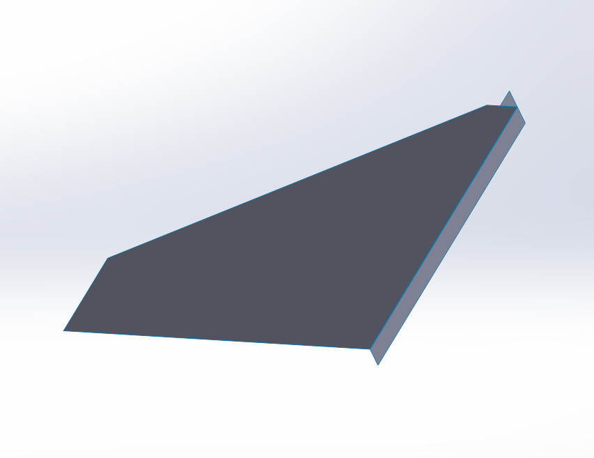
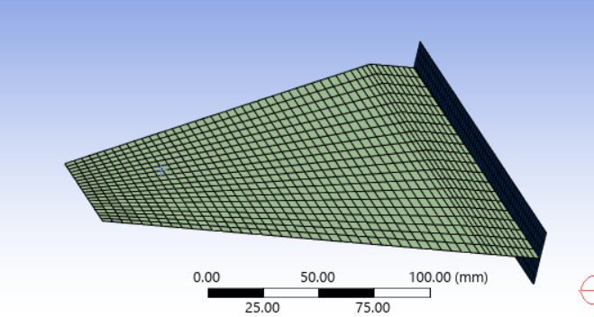
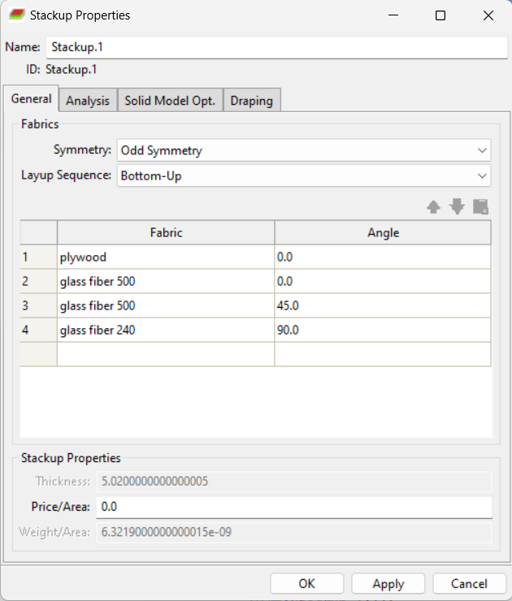
Peak equivalent (von Mises) stress of approximately 9.99 MPa, compared in the report against an estimated allowable of about 13.4 MPa for that load case — i.e. the layup was judged adequate for Study 1's assumptions. That conclusion does not transfer to Study 2.
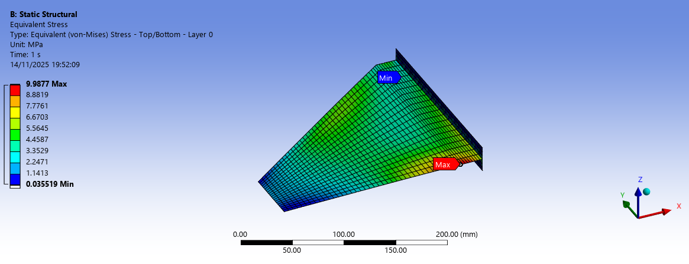
External aerodynamics
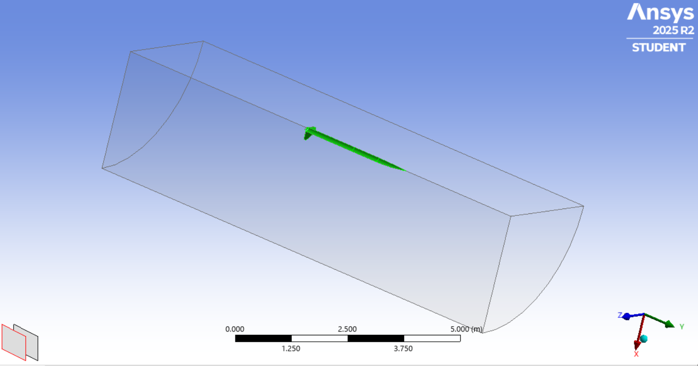
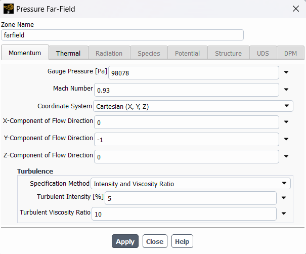
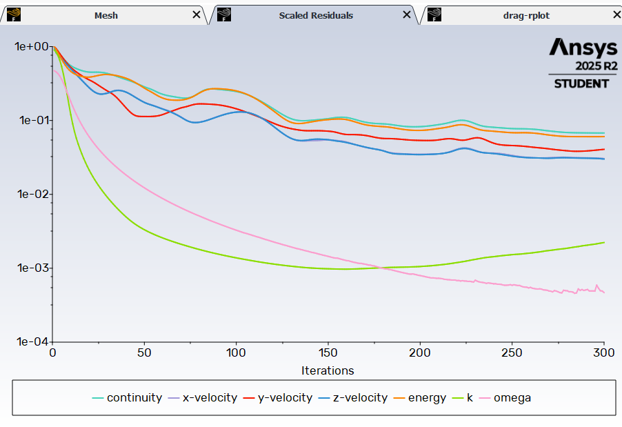
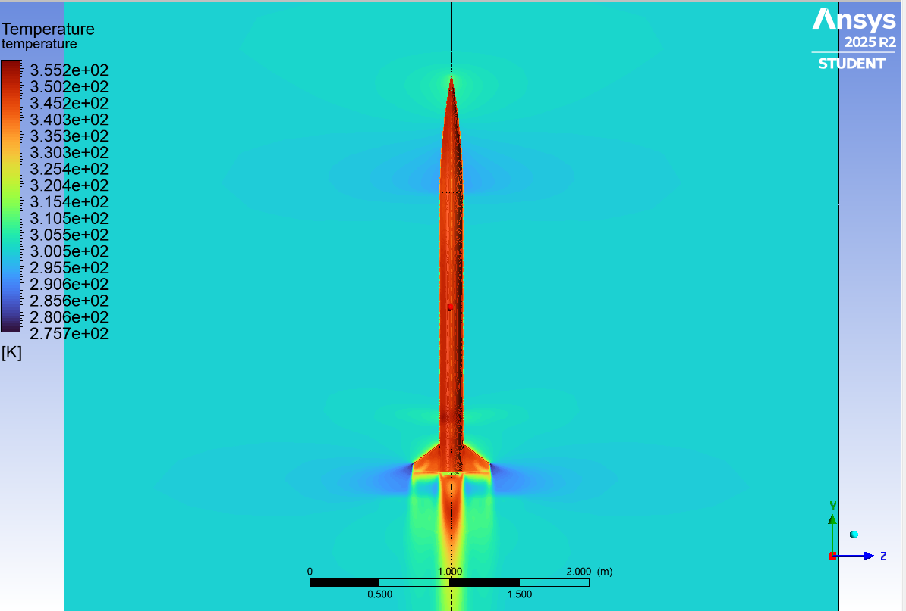
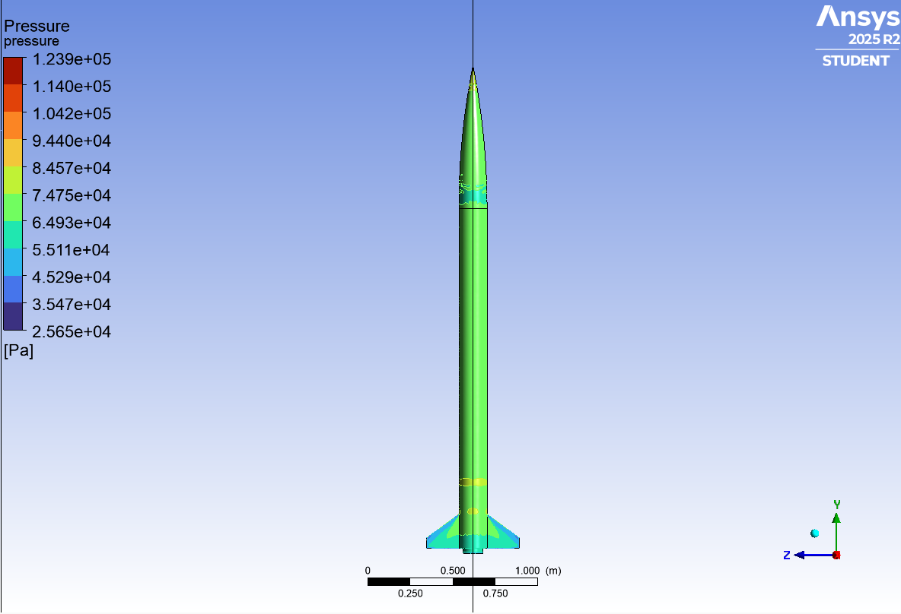
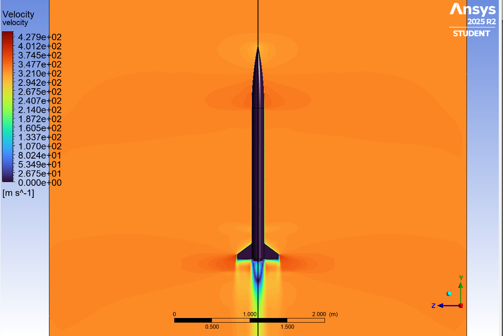
2 mm wood core, 240 g/m² glass throughout
The second model is a different rocket: a 2 mm wood core with three glass-fibre layers per side, all at 240 g/m², again at 0°, 45° and 90°. Same workflow, different configuration.
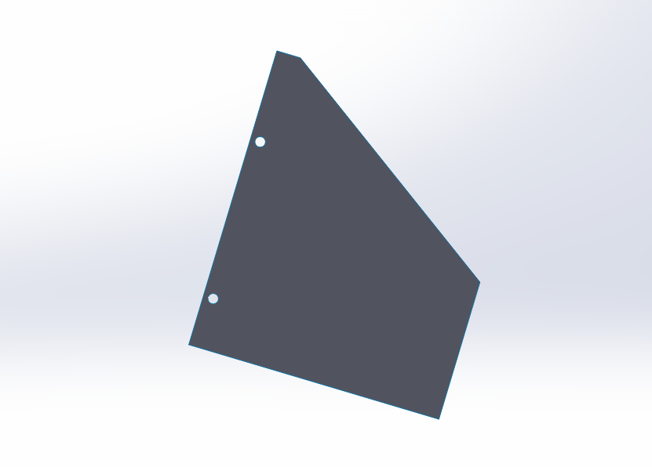
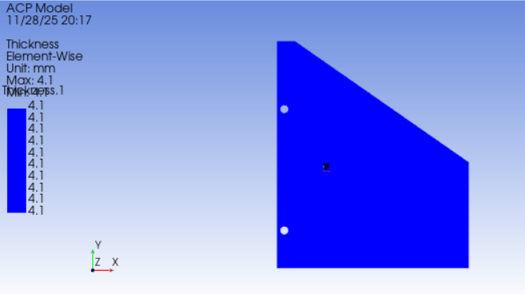
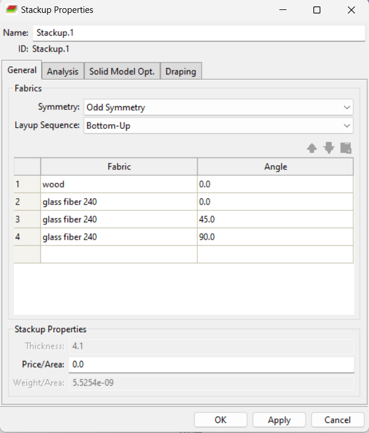
The Study 2 stress contour displays a maximum equivalent stress of 875.42 MPa and the deformation contour 9.5887 mm. The report text does not document an allowable stress or establish that this is acceptable.
A stress of that magnitude in a glass-fibre/wood laminate is not credible as a passing result, and a ~9.6 mm fin deflection would be large. These are therefore presented as plot readings only, not evidence of structural adequacy. Before any conclusion, the load case and its units, material properties, laminate assignment, constraints and the displayed stress quantity need to be checked against the original ANSYS model — a unit or load-application error is the first thing to rule out.
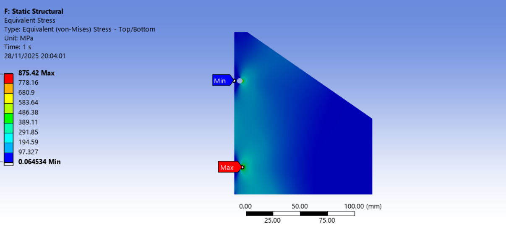
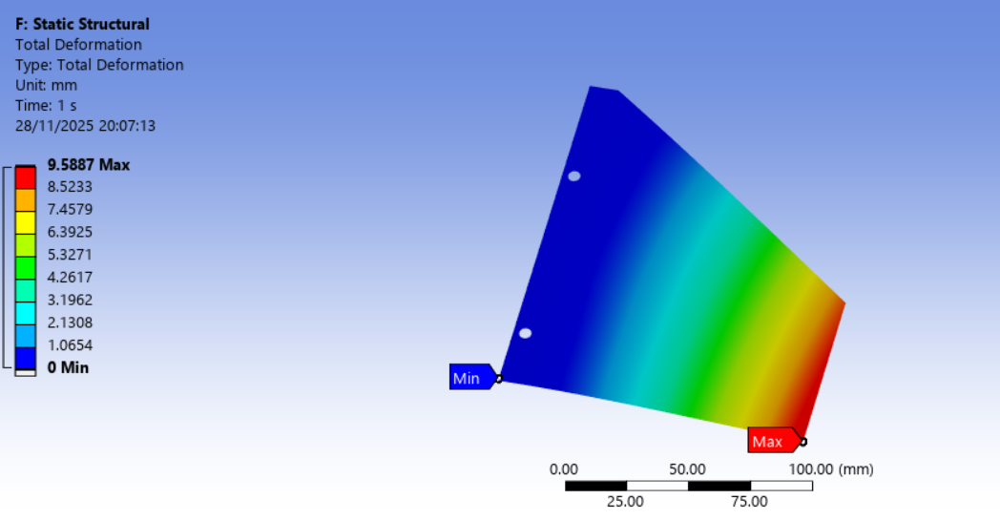
External aerodynamics
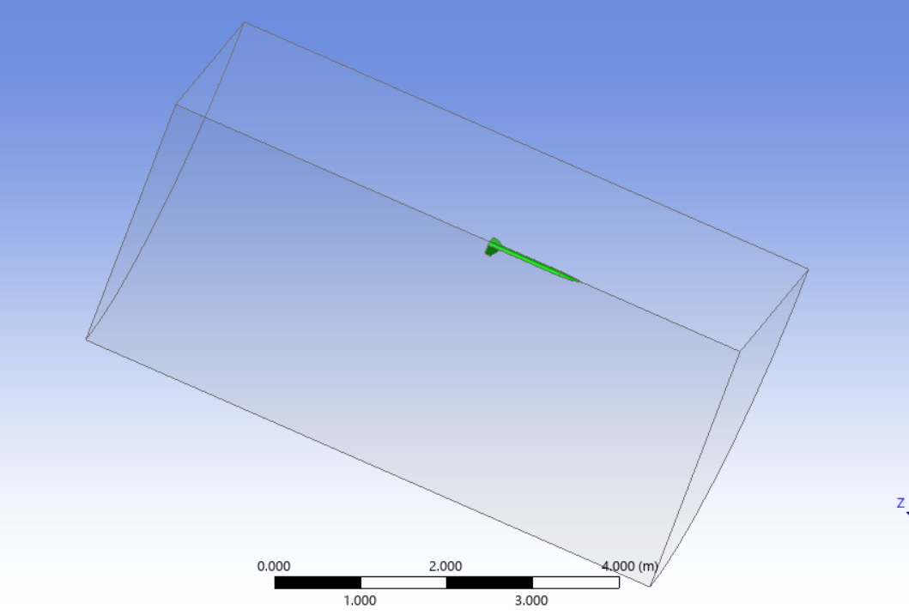
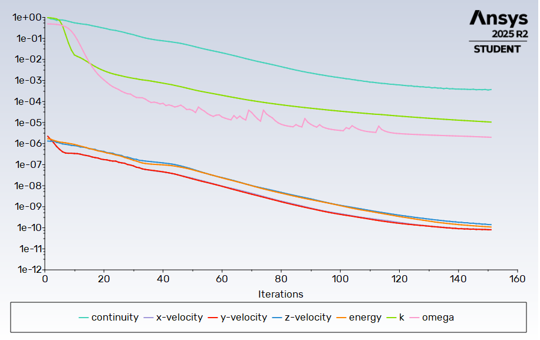
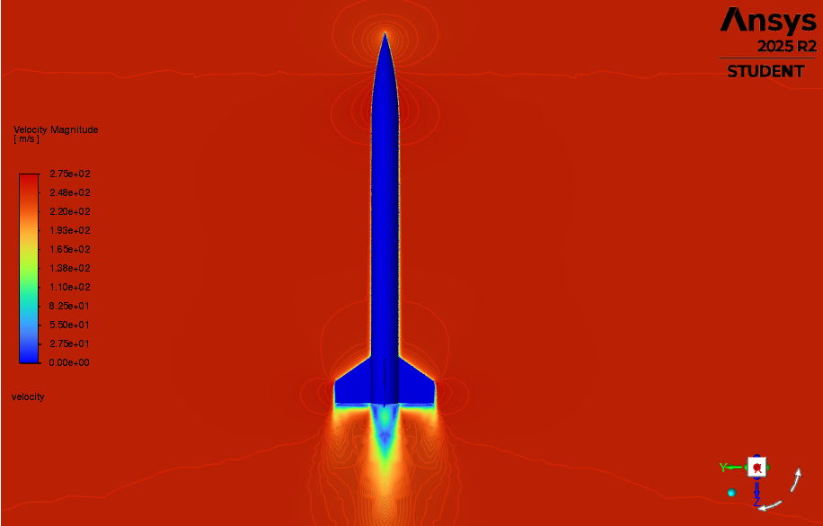
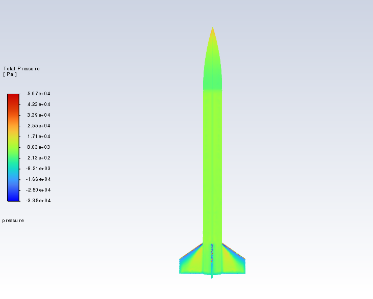
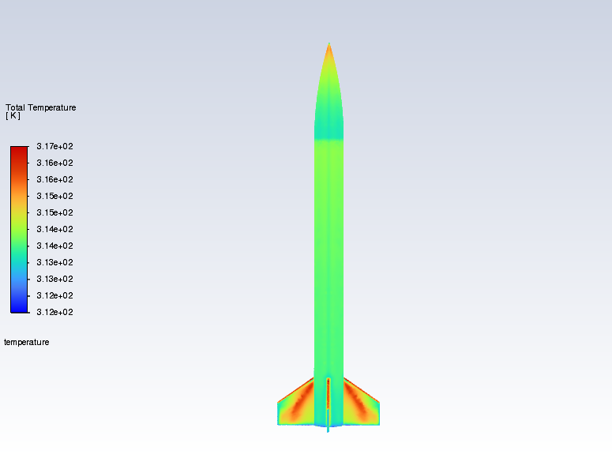
Why these two are not a design iteration
| Study 1 | Study 2 | |
|---|---|---|
| Core | 3 mm wood | 2 mm wood |
| Glass fibre per side | 500 / 500 / 240 g/m² | 240 / 240 / 240 g/m² |
| Orientations | 0° / 45° / 90° | 0° / 45° / 90° |
| Peak equivalent stress | ≈ 9.99 MPa | 875.42 MPa unresolved |
| Allowable documented | ≈ 13.4 MPa (estimated) | Not documented |
| Max deformation | — | 9.5887 mm |
These pages document methods and reported figures. They claim no experimental or flight-test validation. Structural adequacy depends on the exact load case, material characterisation, laminate definition, boundary conditions and failure criterion — and for a composite, von Mises stress is itself a questionable criterion compared with a ply-level one such as Tsai–Wu or Hashin.